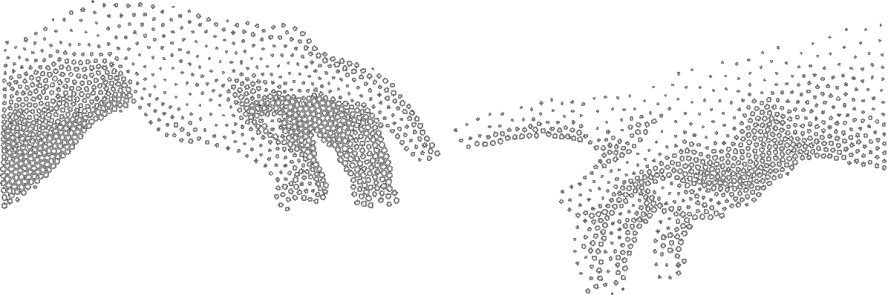

Chromium 是为一个人浏览一组网站而设计的。在同一个配置档案里同时打理店铺、工作账号和副业，指纹、Cookie 和历史会在每个身份之间互相泄漏。
屏幕、时区、语言、硬件和 User-Agent 在每个标签页里都保持一致，网站因此能把你想分开的账号关联起来。
Cookie、登录态和缓存数据会从上一次运行带到下一次，污染会话，让结果无法复现。
每次建立新身份都要翻遍 flags、扩展、代理和浏览器设置。
ZenCloak 只保留真实身份需要的东西：干净且持久的 Chromium 档案、稳定的指纹、按档案隔离的数据，互不串扰。
指纹种子只需创建一次。ZenCloak 一键启动真实的 stealth Chromium 窗口，身份已经就位。
Cookie、登录态和历史只存在于各自档案目录。档案之间不共享任何东西，会话之间不泄漏任何数据。
每个档案可绑定 HTTP 或 SOCKS5 代理，密码先用 Windows DPAPI 加密再落盘。
本地 FastAPI 监听 127.0.0.1 随机端口，现在就能写脚本，MCP 自动化已在路线图上。
继续用桌面客户端，或者用自己的脚本驱动。本地 API 通过普通 HTTP 创建档案、启动会话、打开网址。
一个档案就是一个身份：指纹种子、时区、语言、屏幕、代理和行为设置。
一键打开真实 stealth Chromium 窗口，Cookie 和历史只持久化在这个档案内。
今天用本地 API 驱动，更丰富的自动化和 MCP Server 已在路线图上。
